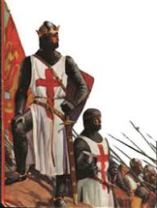
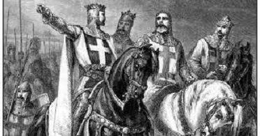
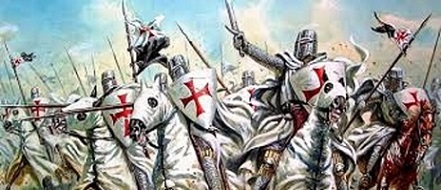
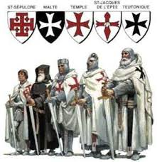
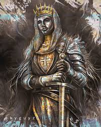
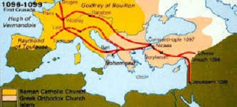
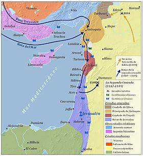

Mas como muitos dizem as cruzadas foram ataques sem razões e que visavam apenas perseguir os islâmicos, e conquistar riquezas para igreja, além dos cruzados conquistarem a terra santa, por um período, os cruzados também ajudaram na libertação de Portugal do domínio islâmico, ou seja, as cruzadas foram uma maneira de defender a cristandade. A seguir estão algumas imagens dos cruzados:
    A invasão islâmica teve origem em Meca e se estendeu sobre o norte africano, peninsula ibérica, peninsula arábica, entre outras regiões, uma invasão que durou algumas décadas e que traria consequências ao mundo por séculos, como mostra o mapa a seguir.
 